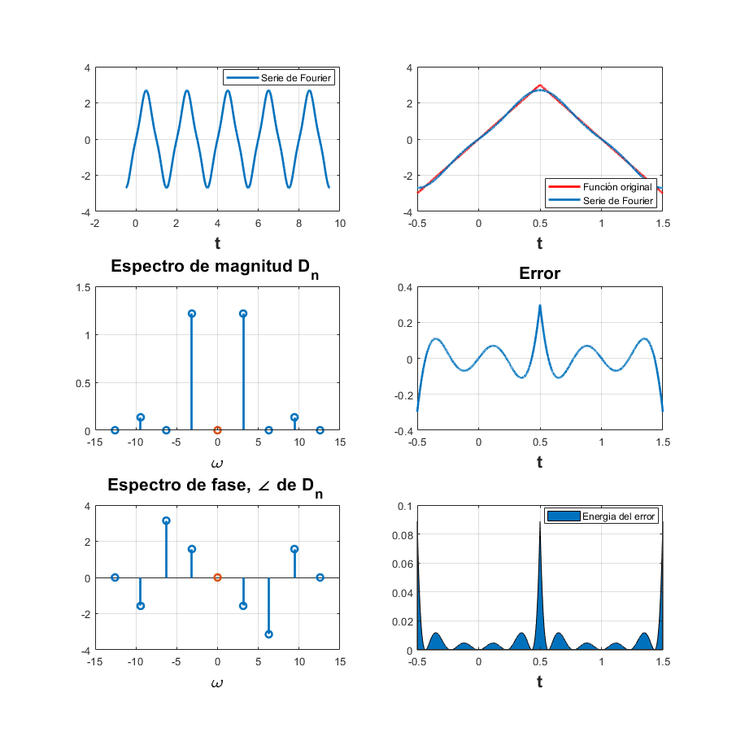
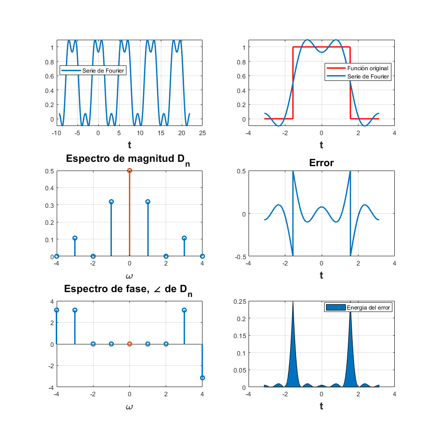
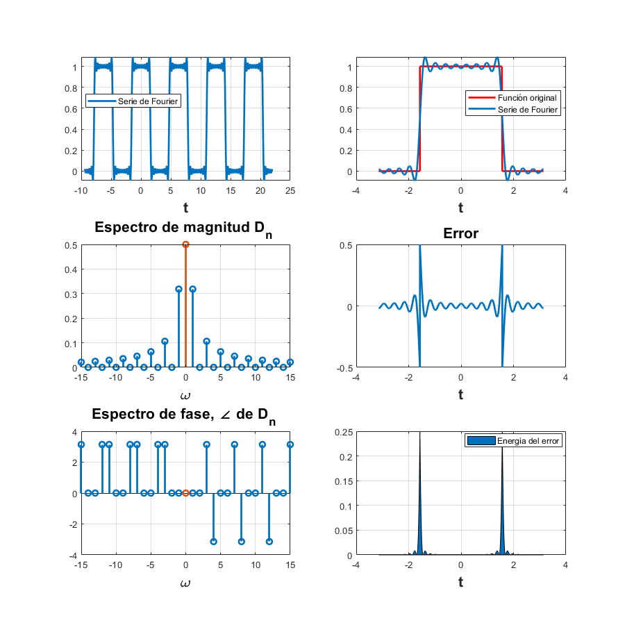
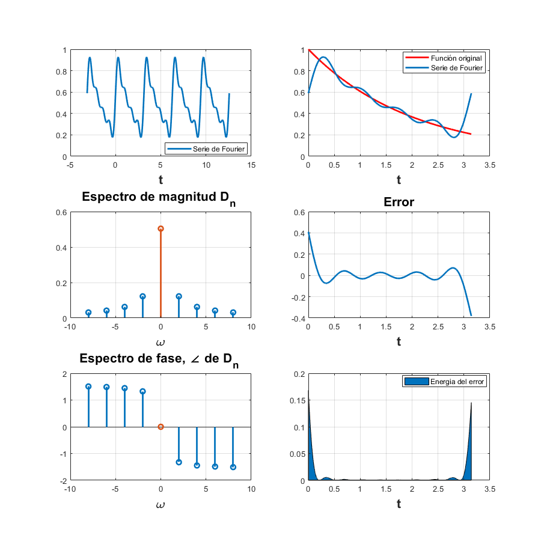
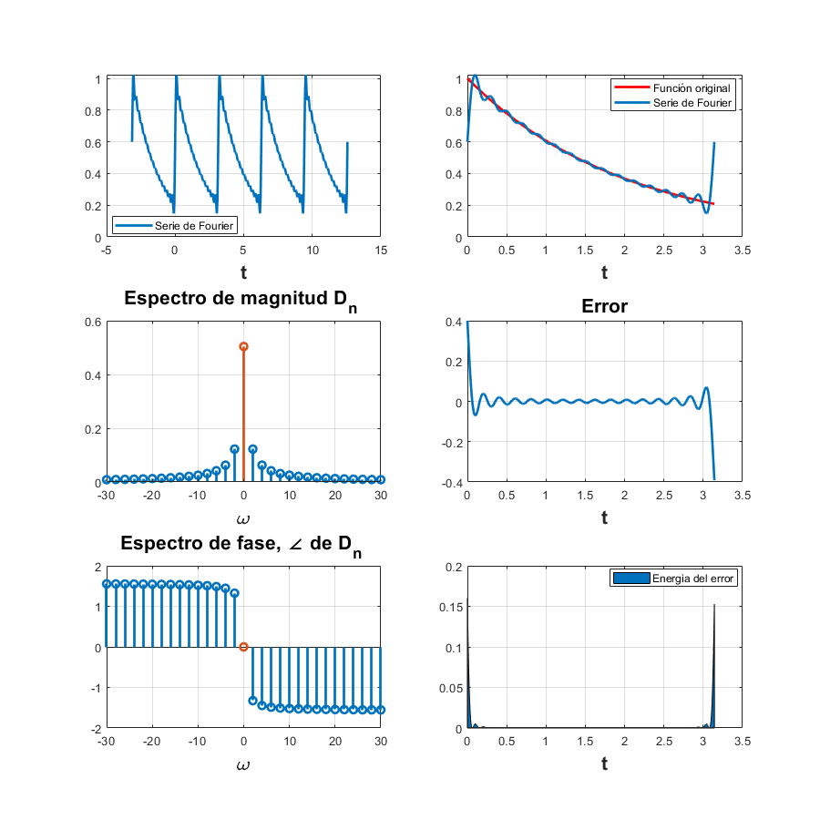
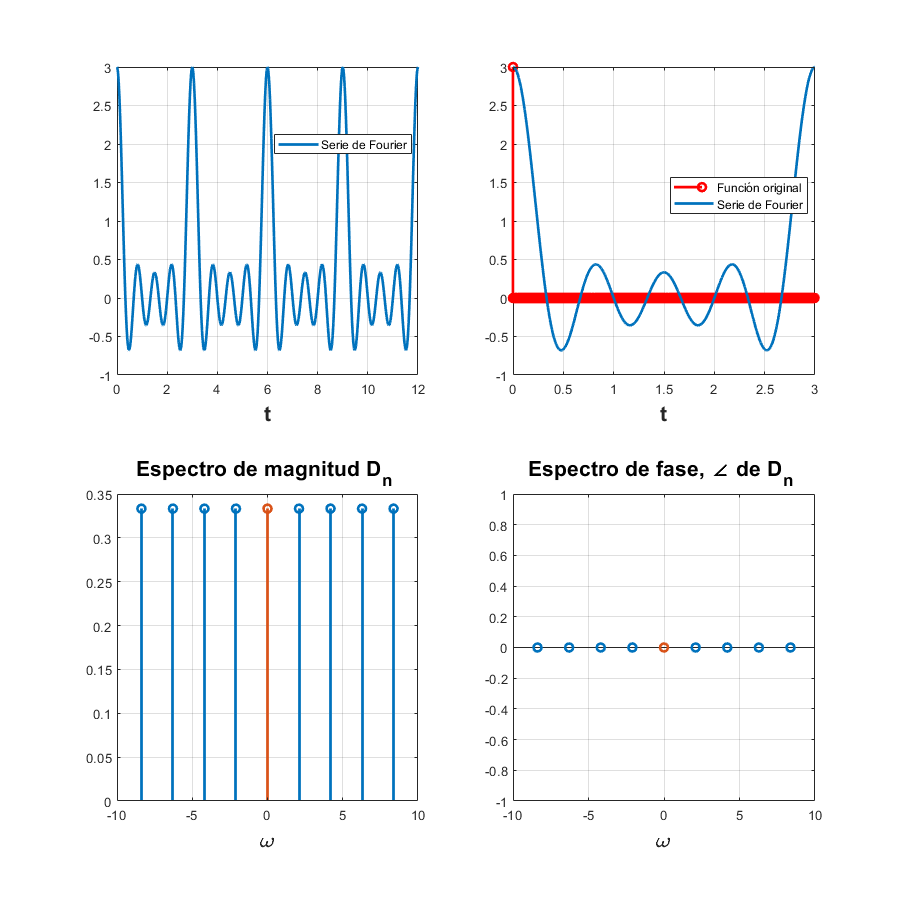
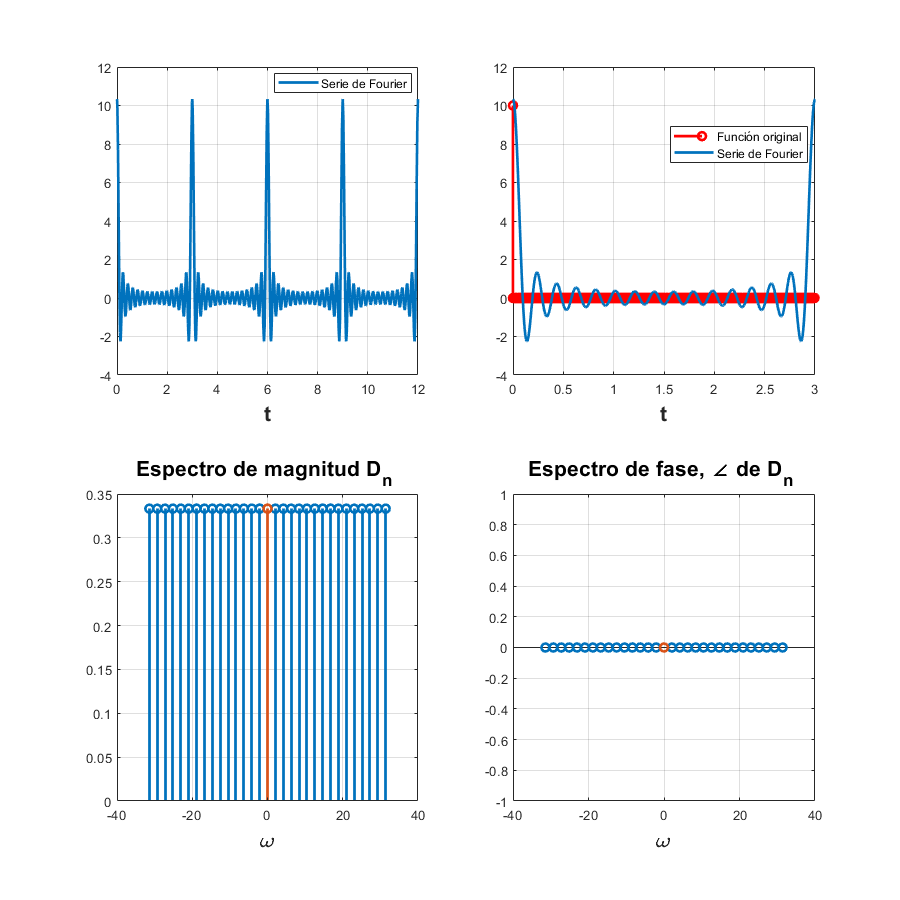
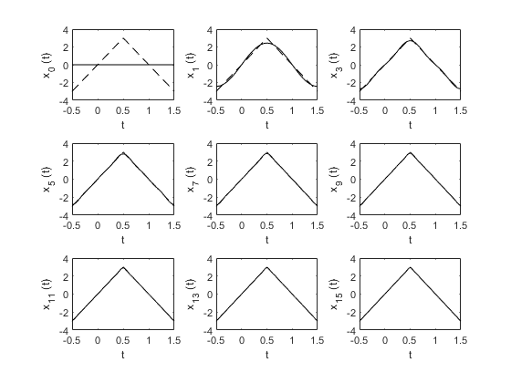

Práctica 5: Series de Fourier en tiempo continuo
Autores:
- Argaez Herrera Antonia Margarita
- Leguizamo Lara Daniela Denisse
- Rojas Solis Juan Carlos
Grupo: 2TV1
Profesor:
Dr. Rafael Martínez Martínez
Contents
- Objetivos
- Introducción
- Desarrollo
- Problema 1
- Problema 2
- Problema 3
- Problema 4
- Problema 5
- Problema 6
- Problema 7
- Codigo de la función de trapecio compuesto
- Conclusiones del Problema 7
- Referencias
- Apendice
- Codigo de la funcion sft
- Codigo de la funcion sfc
- Codigo de la funcion sfc_sin_energia
- Codigo de la funcion problema6
Objetivos
- Realizar gráficas de series de Fourier exponenciales y trigonométricas en tiempo continuo
- Manipulación de instrucciones en MATLAB
- Calculo númerico de los coeficientes de Fourier
Introducción
Nos apoyaremos del codigo que viene en la sección 6.6 de Lathi (Ejemplo de computadora C6.4). Con este codigo podemos hacer una aproximación para calcular los coeficientes Dn
T_0 = ; %Periodo N_0 =; %Muestreo T = T_0/N_0; t = (0:T:T*(N_0-1))'; x = ; %Aqui va la función x(1) = (x + 1)/2; %Aqui calcula D_0 D_n = fft (x)/N_0; %Aqui se calculan los Dn
Este codigo utiliza la funcion fft para aproximar los valores de los coeficientes Dn
fft significa fast fourier transform o transformada rapida de fourier
Desarrollo
Para el desarrollo se tienen que resolver cada uno de los siguientes problemas comenzando una nueva sección (para la publicación) en cada uno de ellos.
Para cada problema debes de realizar
- Realizar el programa de la serie que se indica
- Gráfica de la serie de Fourier en un intervalo que muestre 5 repeticiones
- Gráfica de la señal y la serie de Fourier para 4 armonicos
- Gráfica del error
- Gráfica de la energía del error
- Espectro de magnitud para 4 armonicos
- Espectro de fase para 4 armonicos
- Todo lo anterior para 15 armonicos
Problema 1
- Ejemplo 6.1 Con serie y espectro trigonometrico, no es necesario entregar el código, solo la aplicación al problema especifico, debe de indicar la función y los valores de sus coeficientes (sin incluir el procedimiento)
Con 4 armonicos
close all; clear all; a0=0.504; an=@(n) 0.504*(2/(1+16*n^2)); bn=@(n) 0.504*(8*n/(1+16*n^2)); t0=0; tf=pi; f=@(t) exp(-t/2); armo=4; a=-pi; b=4*pi; sft(t0,tf,a0,an,bn,f,armo,a,b) %El codigo de esta función se encuentra en el apéndice

Con 15 armonicos
close all; clear all; a0=0.504; an=@(n) 0.504*(2/(1+16*n^2)); bn=@(n) 0.504*(8*n/(1+16*n^2)); t0=0; tf=pi; f=@(t) exp(-t/2); armo=15; a=-pi; b=4*pi; sft(t0,tf,a0,an,bn,f,armo,a,b) %El codigo de esta función se encuentra en el apéndice

Problema 2
- Ejemplo 6.2. Con serie y espectro exponencial y A=3, no es necesario entregar el código, solo la aplicación al problema especifico, debe de indicar la función y los valores de sus coeficientes (sin incluir el procedimiento)
Con 4 armonicos
close all; clear all; A=3; d0=0; dn=@(n) (A*exp(-(pi*n*3i)/2)*(exp(pi*n*1i) - 1)*(2 + pi*n*1i + n*pi*exp(pi*n*1i)*1i - 2*exp(pi*n*1i)))/(2*n^2*pi^2); t0=-1/2; tf=3/2; g=@(t) 2.*A.*t.*(t>=-1/2 & t<=1/2); h=@(t) 2.*A.*(1-t).*(t>1/2 & t<=3/2); f=@(t) g(t)+h(t); armo=4; a=-1/2; b=19/2; sfc(t0,tf,dn,d0,f,armo,a,b) %El codigo de esta función se encuentra en el apéndice
Con 15 armonicos
close all; clear all; A=3; d0=0; dn=@(n) (A*exp(-(pi*n*3i)/2)*(exp(pi*n*1i) - 1)*(2 + pi*n*1i + n*pi*exp(pi*n*1i)*1i - 2*exp(pi*n*1i)))/(2*n^2*pi^2); t0=-1/2; tf=3/2; g=@(t) 2.*A.*t.*(t>=-1/2 & t<=1/2); h=@(t) 2.*A.*(1-t).*(t>1/2 & t<=3/2); f=@(t) g(t)+h(t); armo=15; a=-1/2; b=19/2; sfc(t0,tf,dn,d0,f,armo,a,b) %El codigo de esta función se encuentra en el apéndice

Problema 3
- Ejemplo 6.4. Con serie y espectro exponencial, no es necesario entregar el código, solo la aplicación al problema especifico, debe de indicar la función y los valores de sus coeficientes (sin incluir el procedimiento)
Con 4 armonicos
close all; clear all; d0=(5734161139222659*pi)/36028797018963968; dn=@(n) -(exp(-(pi.*n.*1i)./2).*(exp(pi.*n.*1i) - 1).*5734161139222659i)./(36028797018963968.*n); t0=-pi; tf=pi; f=@(t) 0.*(t>=-pi & t<=-pi/2) + 1.*(t>-pi/2 & t<=pi/2) + 0.*(t>pi/2 & t<=pi); armo=4; a=-3*pi; b=7*pi; sfc(t0,tf,dn,d0,f,armo,a,b) %El codigo de esta función se encuentra en el apéndice
Con 15 armonicos
close all; clear all; d0=(5734161139222659*pi)/36028797018963968; dn=@(n) -(exp(-(pi.*n.*1i)./2).*(exp(pi.*n.*1i) - 1).*5734161139222659i)./(36028797018963968.*n); t0=-pi; tf=pi; f=@(t) 0.*(t>=-pi & t<=-pi/2) + 1.*(t>-pi/2 & t<=pi/2) + 0.*(t>pi/2 & t<=pi); armo=15; a=-3*pi; b=7*pi; sfc(t0,tf,dn,d0,f,armo,a,b) %El codigo de esta función se encuentra en el apéndice
Problema 4
- Ejercicio 6.5. Con serie y espectro exponencial, no es necesario entregar el código, solo la aplicación al problema especifico, debe de indicar la función y los valores de sus coeficientes (sin incluir el procedimiento)
Con 4 armonicos
close all; clear all; d0=0.504; dn=@(n) (0.504)./(1+j.*4.*n); t0=0; tf=pi; f=@(t) exp(-t/2); armo=4; a=-pi; b=4*pi; sfc(t0,tf,dn,d0,f,armo,a,b) %El codigo de esta función se encuentra en el apéndice
Con 15 armonicos
close all; clear all; d0=0.504; dn=@(n) (0.504)./(1+j.*4.*n); t0=0; tf=pi; f=@(t) exp(-t/2); armo=15; a=-pi; b=4*pi; sfc(t0,tf,dn,d0,f,armo,a,b) %El codigo de esta función se encuentra en el apéndice
Problema 5
- Ejemplo 6.7. Con serie y espectro exponencial y
 sin incluir la gráfica de f, error ni energía del error, no es necesario entregar el código, solo la aplicación al problema especifico, debe de indicar la función y los valores de sus coeficientes (sin incluir el procedimiento)
sin incluir la gráfica de f, error ni energía del error, no es necesario entregar el código, solo la aplicación al problema especifico, debe de indicar la función y los valores de sus coeficientes (sin incluir el procedimiento)
Con 4 armonicos
close all; clear all; T0=3; d0=1/T0; dn=@(n) 1/T0; t0=0; tf=T0; f=@(t) 3.*(t==0); armo=4; a=0; b=12; sfc_sin_energia(t0,tf,dn,d0,f,armo,a,b) %El codigo de esta función se encuentra en el apéndice
Con 15 armonicos
close all; clear all; T0=3; d0=1/T0; dn=@(n) 1/T0; t0=0; tf=T0; f=@(t) 10.*(t==0); armo=15; a=0; b=12; sfc_sin_energia(t0,tf,dn,d0,f,armo,a,b) %El codigo de esta función se encuentra en el apéndice
Problema 6
- Elabore un código similar al COMPUTER EXAMPLE C6.2 que se encuentra al final de la sección 6.2 de Lathi para el Ejempo 6.2 con los datos indicados anteriormente (no utilice inline)
problema6 %El codigo de esta función se encuentra en el apéndice
 Problema 7
- Elabore un código que implemente el algoritmo de trapecio compuesto para
 , Utilice este código para aproximar
, Utilice este código para aproximar  del ejemplo de la práctica. Ahora implemente el código COMPUTER EXAMPLE C6.4 que se encuentra al final de la sección 6.6 de Lathi, y calcule nuevamente los coeficientes del ejemplo propuesto. Muestre una tabla que contenga los coeficientes mencionados calculados con los dos algoritmos y de forma exacta, ¿Qué algoritmo aproxima mejor a los coeficientes?, para esto compare los coeficientes con el valor absoluto de la resta.
del ejemplo de la práctica. Ahora implemente el código COMPUTER EXAMPLE C6.4 que se encuentra al final de la sección 6.6 de Lathi, y calcule nuevamente los coeficientes del ejemplo propuesto. Muestre una tabla que contenga los coeficientes mencionados calculados con los dos algoritmos y de forma exacta, ¿Qué algoritmo aproxima mejor a los coeficientes?, para esto compare los coeficientes con el valor absoluto de la resta.
Los Dn
close all; clear all; Dn=[0:4]';
Valor analitico
p=[0:4]'; Analitico = (0.504)./(1+4.*p.*j);
Valor obtenido del codigo de Lathi
T_0 = pi;
N_0 = 5;
T = T_0/N_0;
t = (0:T:T*(N_0-1))';
x = exp(-t/2);
x(1) = (exp(-pi/2) + 1)/2;
Lathi = fft (x)/N_0; %Este es el valor de Dn
Valor obtenido por el codigo del trapecio compuesto
syms t; trapecios=15; f=@(t) exp(-t/2); T0=pi; w0=2; a=0; b=pi; n=[0:4]'; Trapecio_compuesto= (1/T0).*Trapecio(f(t).*cos(n.*w0.*t),a,b,trapecios) - j.*(1/T0).*Trapecio(f(t).*sin(n.*w0.*t),a,b,trapecios);%Calcula los Dn por el trapecio compuesto %
Calculamos el Error de Analitico - Lathi
EAL= abs(Analitico-Lathi);
Calculamos el Error de Analitico - Trapecio compuesto
EAT= abs(Analitico-Trapecio_compuesto);
%Sacamos la tabla
T = table(Dn,Analitico,Lathi,Trapecio_compuesto,EAL,EAT)
T =
5×6 table
Dn Analitico Lathi Trapecio_compuesto EAL EAT
__ ___________________ __________________ ___________________ _________ ________
0 0.504+0i 0.50842+0i 0.10273+0i 0.0044203 0.40127
1 0.029647-0.11859i 0.03415-0.1017i -0.022155-0.019673i 0.017476 0.11166
2 0.0077538-0.062031i 0.013609-0.025049i -0.023505+0.014194i 0.037443 0.082385
3 0.0034759-0.04171i 0.013609+0.025049i 0.07036+0.055657i 0.067524 0.11813
4 0.0019611-0.031377i 0.03415+0.1017i -0.019675-0.025823i 0.13692 0.022338
Codigo de la función de trapecio compuesto
function [Integral]=Trapecio(funcion,a,b,trapecios) h=(b-a)/trapecios; f=0; for t=1:trapecios-1 x=a+h*t; f=f+eval(funcion); end f=2*f; x=a; f=f+eval(funcion); x=b; f=f+eval(funcion); Integral=(h/2)*(f); end
Conclusiones del Problema 7
Como se puede observar en la tabla, los valores del codigo de Lathi se aproximan a los obtenidos del valor analítico. Sin embargo, los valores obtenidos con el codigo del trapecio compuesto si difieren bastante de los obtenidos en el metodo analítico. Por lo que podemos concluir que el metodo de Lathi son mas precisos que los obtenidos por el metodo del trapecio compuesto.
Referencias
[1] Lathi, B. (2005). Linear systems and signals, second edition. Oxford University Press
[2] http://obbycc.scienceontheweb.net/Practices/practica8.PDF
Apendice
A continuación se muestran los codigos de las funciones sft, sfc, problema6 y sfc_sin_energia
Codigo de la funcion sft
function sft(t0,tf,a0,an,bn,f,armo,a,b) % t0 el valor inicial para calcular la serie % tf el valor final donde calcular la serie % an función de la fórmula an de la serie de fourier trigonometrica % bn función de la fórmula bn de la serie de fourier trigonometrica % f función original % armo número de armonicos a utilizar en la gráfica % a, b intevalo para realizar la grafica de la serie
w0=2*pi/(tf-t0);
sf=a0; t=a:0.0001:b;
for n=1:armo sf=sf+an(n).*cos(n.*w0.*t)+bn(n).*sin(n.*w0.*t); end figure (1) hFig = figure(1); set(hFig, 'Position', [0 0 900 900]) subplot(3,2,1) plot(t,sf,'LineWidth',2) grid on legend('Serie de Fourier','Location','Best') xlabel('t','FontWeight','bold','FontSize',16)
sf=a0; t1=t0:0.0001:tf;
for n=1:armo sf=sf+an(n).*cos(n.*w0.*t1)+bn(n).*sin(n.*w0.*t1); end
subplot(3,2,2) plot(t1,f(t1),'r','LineWidth',2) grid on hold on plot(t1,sf,'LineWidth',2) legend('Función original','Serie de Fourier ','Location','Best') xlabel('t','FontWeight','bold','FontSize',16) nn=0:armo; axis auto
subplot(3,2,4) e=f(t1)-sf; plot(t1,e,'LineWidth',2) title('Error','FontWeight','bold','FontSize',16) xlabel('t','FontWeight','bold','FontSize',16) axis auto grid on
subplot(3,2,6) e=f(t1)-sf; area(t1,e.^2) legend('Energia del error','Location','Best') xlabel('t','FontWeight','bold','FontSize',16) axis auto grid on
absan=zeros(1,length(nn)); absbn=zeros(1,length(nn)); cont=1;
for i =0:armo if i==0 absan(cont)=a0; cont=cont+1; else absan(cont)=an(i); absbn(cont)=bn(i); cont=cont+1; end end
subplot(3,2,3) stem((w0*nn),absan,'LineWidth',2) title('a_n ','FontWeight','bold','FontSize',16) xlabel('n\omega_0','FontWeight','bold','FontSize',16) grid on
subplot(3,2,5) % % stem(w0*nn,absbn,'LineWidth',2) % % title('bn','FontWeight','bold','FontSize',16) % % xlabel('n\omega_0','FontWeight','bold','FontSize',16) grid on
end
Codigo de la funcion sfc
function sfc(t0,tf,dn,d0,f,armo,a,b) % t0 el valor inicial para calcular la serie % tf el valor final donde calcular la serie % dn función de la fórmula de los dn % f función original % armo número de armonicos a utilizar en la gráfica % a, b intevalo para realizar la grafica de la serie
w0=2*pi/(tf-t0);
sf=d0; t=a:0.0001:b;
for n=1:armo sf=sf+dn(-n)*exp(w0*-n*t*j)+dn(n)*exp(w0*n*t*j); end figure (1) hFig = figure(1); set(hFig, 'Position', [0 0 900 900]) subplot(3,2,1) plot(t,sf,'LineWidth',2) grid on legend('Serie de Fourier','Location','Best') xlabel('t','FontWeight','bold','FontSize',16)
sf=d0; t1=t0:0.0001:tf;
for n=1:armo sf=sf+dn(-n)*exp(w0*-n*t1*j)+dn(n)*exp(w0*n*t1*j); end
subplot(3,2,2) plot(t1,f(t1),'r','LineWidth',2) grid on hold on plot(t1,sf,'LineWidth',2) legend('Función original','Serie de Fourier ','Location','Best') xlabel('t','FontWeight','bold','FontSize',16) nn=-armo:armo; axis auto
subplot(3,2,4) e=f(t1)-sf; plot(t1,e,'LineWidth',2) title('Error','FontWeight','bold','FontSize',16) xlabel('t','FontWeight','bold','FontSize',16) axis auto grid on
subplot(3,2,6) e=f(t1)-sf; area(t1,e.^2) legend('Energia del error','Location','Best') xlabel('t','FontWeight','bold','FontSize',16) axis auto grid on
absdn=zeros(1,length(nn)); cont=1; for i =-armo:armo if i==0 absdn(cont)=d0; end absdn(cont)=dn(i); cont=cont+1; end
subplot(3,2,3) stem(w0*nn,abs(absdn),'LineWidth',2) hold on stem(0,abs(d0),'LineWidth',2) title('Espectro de magnitud D_n ','FontWeight','bold','FontSize',16) xlabel('\omega','FontWeight','bold','FontSize',16) grid on
subplot(3,2,5) % % stem(w0*nn,angle(absdn),'LineWidth',2) % % hold on stem(0,angle(d0),'LineWidth',2) title('Espectro de fase, \angle de D_n ','FontWeight','bold','FontSize',16) % % xlabel('\omega','FontWeight','bold','FontSize',16) grid on
end
Codigo de la funcion sfc_sin_energia
function sfc_sin_energia(t0,tf,dn,d0,f,armo,a,b) % t0 el valor inicial para calcular la serie % tf el valor final donde calcular la serie % dn función de la fórmula de los dn % f función original % armo número de armonicos a utilizar en la gráfica % a, b intevalo para realizar la grafica de la serie
w0=2*pi/(tf-t0);
sf=d0; t=a:0.0001:b;
for n=1:armo sf=sf+dn(-n)*exp(w0*-n*t*j)+dn(n)*exp(w0*n*t*j); end figure (1) hFig = figure(1); set(hFig, 'Position', [0 0 900 900]) subplot(2,2,1) plot(t,sf,'LineWidth',2) grid on legend('Serie de Fourier','Location','Best') xlabel('t','FontWeight','bold','FontSize',16)
sf=d0; t1=t0:0.0001:tf;
for n=1:armo sf=sf+dn(-n)*exp(w0*-n*t1*j)+dn(n)*exp(w0*n*t1*j); end
subplot(2,2,2) stem(t1,f(t1),'r','LineWidth',2) grid on hold on plot(t1,sf,'LineWidth',2) legend('Función original','Serie de Fourier ','Location','Best') xlabel('t','FontWeight','bold','FontSize',16) nn=-armo:armo; axis auto
absdn=zeros(1,length(nn)); cont=1; for i =-armo:armo if i==0 absdn(cont)=d0; end absdn(cont)=dn(i); cont=cont+1; end
subplot(2,2,3) stem(w0*nn,abs(absdn),'LineWidth',2) hold on stem(0,abs(d0),'LineWidth',2) title('Espectro de magnitud D_n ','FontWeight','bold','FontSize',16) xlabel('\omega','FontWeight','bold','FontSize',16) grid on
subplot(2,2,4) % % stem(w0*nn,angle(absdn),'LineWidth',2) % % hold on stem(0,angle(d0),'LineWidth',2) title('Espectro de fase, \angle de D_n ','FontWeight','bold','FontSize',16) % % xlabel('\omega','FontWeight','bold','FontSize',16) grid on
end
Codigo de la funcion problema6
function problema6
clear all; close all;
A=3; g=@(t) 2.*A.*t.*(t>=-1/2 & t<=1/2); h=@(t) 2.*A.*(1-t).*(t>1/2 & t<=3/2); x=@(t) g(t)+h(t); t = linspace(-1/2, 3/2,1000); sumterms = zeros(16,length(t)); sumterms(1,:) = 0; for n = 1:size(sumterms,1)-1; sumterms(n+1,:) = (8.*A)./(n.^2.*pi.^2).*sin(n.*pi./2).*sin(n.*pi.*t); end
x_N = cumsum(sumterms); figure(1); clf; ind = 0;
for N = [0,1:2:size(sumterms, 1)-1], ind = ind+1; subplot (3,3,ind); plot(t,x_N(N+1,:),'k',t,x(t), 'k--'); axis([-1/2 3/2 -4 4]); xlabel('t'); ylabel(['x_{',num2str(N),'} (t)']); end
end